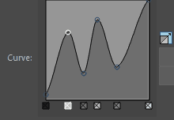

Blue Pencil 工具允许您使用衰减曲线为“铅笔”(Pencil)、“笔刷”(Brush)和“橡皮擦”(Eraser)工具创建自定义设置。
打开这些设置
- 在“铅笔”(Pencil)、“笔刷”(Brush)和“橡皮擦”(Eraser)工具的 Blue Pencil 工具设置中，展开“不透明度”(Opacity)、“大小”(Size)和“硬度曲线”(Hardness Curves)部分。
常规曲线设置
Blue Pencil 衰减曲线与其他
Maya 工具的衰减曲线类似，但是存在一些差异：
- “硬度曲线”(Hardness Curves)：笔刷通常在中心处开始不透明，越靠边缘变得越柔和（类似于“雕刻”(Sculpt)或“软选择”(Soft select)衰减）
-
“调整曲线大小”(Size Curve)和“不透明度曲线”(Opacity Curve)：使用“衰减”一词时，这些设置由光笔压力（而非距离）驱动，输出通常随压力增大而增大，而不是减小。
注： 除“硬度曲线”(Hardness Curves)以外的衰减曲线设置仅适用于绘图板笔，“硬度曲线”(Hardness Curves)对于“笔刷”(Brush)和“橡皮擦”(Eraser)工具均可用。请参见
将绘图板与 Blue Pencil 结合使用。
- 曲线栅格
- 单击曲线上的任意位置以插入曲线点。若要移动点，请拖动它们。
- 曲线删除控制柄
- 单击“衰减曲线”(Falloff Curve)栅格下相应的“删除控制柄”(Delete Handles)，或者按住 Ctrl 键并单击曲线上的点。
- “展开衰减”(Expand Falloff)
-

单击“衰减曲线”(Falloff Curve)旁边的 以打开更大的“衰减曲线”(Falloff Curve)编辑窗口。
为了帮助您区分曲线上相距很近的点，删除控制柄以灰色色调显示。删除控制柄越暗，Y 轴上的点就越高。
- 重置曲线(Reset Curve)
- 将衰减曲线重置为其默认形状。
- 保存自定义曲线(Save Custom Curve)
-
将当前的衰减曲线保存到“工具设置”(Tool Settings)中的“自定义曲线”(Custom Curve)预设。
- 插值(Interpolation)
-
-
控制在图表中计算值的方式。从下拉列表中选择下列选项之一：
-
- 无(None)
-
不存在插值；每个值都是图表上的一个不同的步长。
- 线性(Linear)
-
这些值在空间中进行线性插值。
- 平滑(Smooth)
-
这些值是沿钟形曲线进行插值的，使图表上的每个值控制围绕该图表的区域，然后快速融合到下一个值。
- 样条线(Spline)
-
与“平滑”(Smooth)类似，但是“样条线”(Spline)将相邻的索引考虑进去以获得更平滑的效果。
- 预设曲线(Preset Curve)
- 从一系列常用预设中进行选择。
- 自定义曲线(Custom Curve)
- 使用“保存自定义曲线”(Save Custom Curve)时所创建的自定义曲线的站点。
铅笔工具曲线设置
“铅笔”(Pencil)工具的“曲线”(Curve)设置允许您使用绘图板的压力敏感度来创建唯一的笔划。有关使用衰减曲线的说明，请参见本主题开头的常规曲线设置。
- 不透明度曲线
- 启用 Blue Pencil 工具设置中的“对不透明度启用绘图板压力”(Enable Tablet Pressure for Opacity)，以使用“不透明度曲线”(Opacity curve)设置 Blue Pencil 笔划的行为。可以改变不透明度，而不是使厚度均匀，例如，创建柔和的起点，然后显著增加笔划的强度。
-
注： “不透明度曲线”(Opacity Curve)仅针对 Blue Pencil“笔刷”(Brush)工具提供，而不针对“铅笔”(Pencil)或“橡皮擦”(Eraser)提供。
- 调整曲线大小(Size Curve)
- 启用Blue Pencil 工具设置中的“对大小启用绘图板压力”(Enable Tablet Pressure for Size)，以使用“调整曲线大小”(Size Curve)为 Blue Pencil 笔划创建可变大小。
-
注： “调整曲线大小”(Size Curve)仅针对 Blue Pencil“笔刷”(Brush)和“铅笔”(Pencil)工具提供。它不适用于 Blue Pencil 橡皮擦。
笔刷工具曲线设置
“笔刷”(Brush)工具的“曲线”(Curve)设置允许您使用绘图板的压力敏感度来创建唯一的笔划。有关使用衰减曲线的说明，请参见本主题开头的
常规曲线设置。
注： 无需压力敏感型绘图板，亦能访问此工具的硬度曲线。
- 不透明度曲线
- 使用“不透明度”(Opacity)曲线可设置 Blue Pencil 笔划的行为。可以改变不透明度，而不是使厚度均匀，例如，创建柔和的起点，然后显著增加笔划的强度。
-
注： “不透明度曲线”(Opacity Curve)仅针对 Blue Pencil“笔刷”(Brush)工具提供，而不针对“铅笔”(Pencil)或“橡皮擦”(Eraser)提供。
- 调整曲线大小(Size Curve)
- 使用“调整曲线大小”(Size Curve)为 Blue Pencil 笔划创建可变大小。
-
注： “调整曲线大小”(Size Curve)仅针对 Blue Pencil“笔刷”(Brush)和“铅笔”(Pencil)工具提供。它不适用于 Blue Pencil 橡皮擦。
- 硬度曲线
-
- 使用“硬度曲线”(Hardness curve)创建具有不同定义的笔划：硬度会影响笔刷是尖锐还是模糊。
-
注： “硬度曲线”(Hardness curve)仅适用于 Blue Pencil“笔刷”(Brush)和“橡皮擦”(Eraser)工具，它不针对“铅笔”(Pencil)提供。
橡皮擦工具曲线设置
“橡皮擦”(Eraser)工具的“曲线”设置允许您使用绘图板的压力敏感度来创建唯一的笔划。有关使用衰减曲线的说明，请参见本主题开头的常规曲线设置。
注： 无需压力敏感型绘图板，亦能访问此工具的硬度曲线。
- 调整曲线大小(Size Curve)
- 使用“调整曲线大小”(Size Curve)为 Blue Pencil 笔划创建可变大小。
-
注： “调整曲线大小”(Size Curve)仅针对 Blue Pencil“笔刷”(Brush)和“铅笔”(Pencil)工具提供。它不适用于 Blue Pencil 橡皮擦。
- 硬度曲线
- 使用“硬度曲线”(Hardness curve)创建具有不同定义的笔划：硬度会影响笔刷是尖锐还是模糊。
-
注： “硬度曲线”(Hardness curve)仅适用于 Blue Pencil“笔刷”(Brush)和“橡皮擦”(Eraser)工具，它不针对“铅笔”(Pencil)提供。